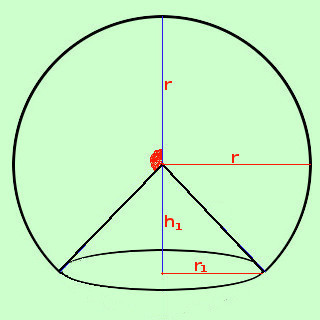
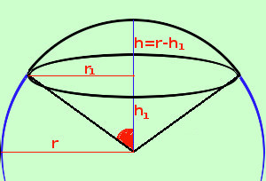

|
 Anche qui occorre avere ben chiara la rappresentazione spaziale della figura: consideriamo il caso a fianco In questo caso l'area e' data dalla superficie della calotta sferica piu' l'area della superficie del buco a forma di cono, quindi As settore sferico = As calotta + As cono As settore sferico = π r h + π r1 apotema essendo h dato dalla somma di r e h1 e siccome l'apotema del cono vale r As settore sferico = π r h + π r1 r = π r (h + r1)  Tale formula vale in generale, ricordando pero' che, nei casi come quello qui a fianco raffigurato, si tratta sempre della somma delle aree di una zona e di due coni, ma devi fare h = r - h1 poiche' h e' l'altezza della calotta sferica e stavolta il cono non e' un buco Come vedi anche qui e' essenziale avere ben chiara la figura per poter decidere se fare la somma o la differenza |